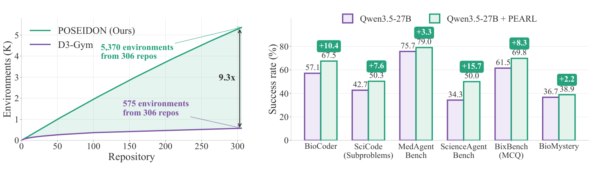
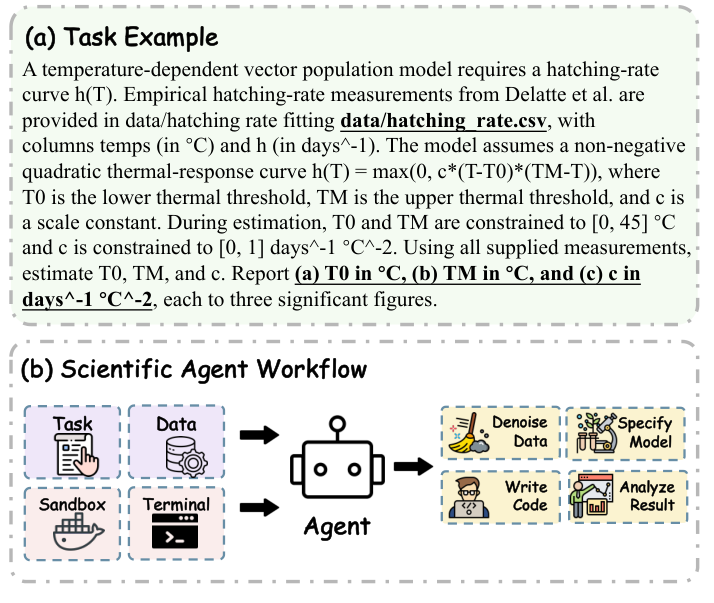
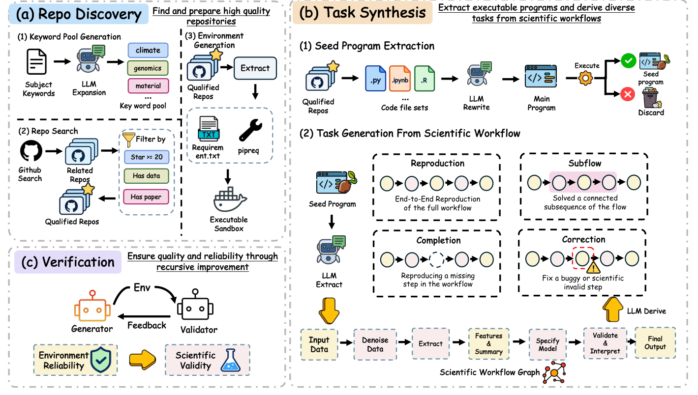
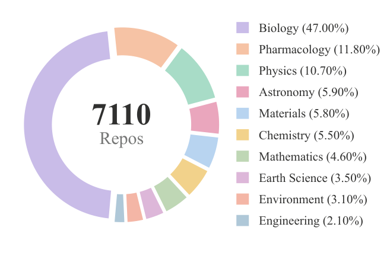
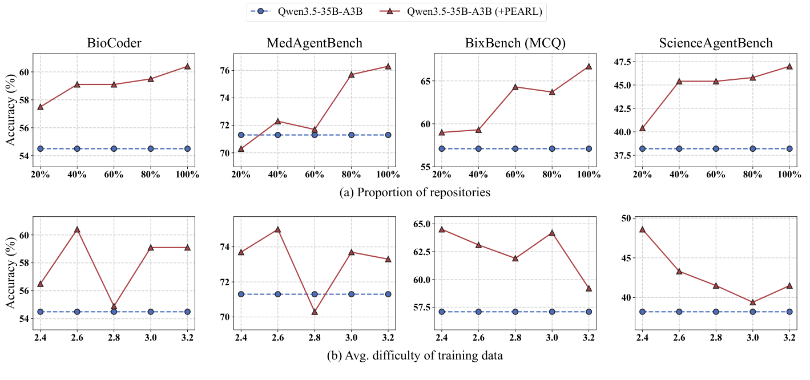

POSEIDON：把科研代码仓库变成可执行、可评分的智能体训练环境
论文原文 ↗论文：POSEIDON: Scaling Training Environments for Scientific Agents from Code Repositories
作者：Qifan Zhang、Yuhan Li、Nuo Chen、Bowen Liu 等；香港科技大学（广州）、腾讯混元团队
来源：arXiv，2026-10-23；官方页面 ·
科研智能体缺少的，是能真正动手并得到反馈的训练场
一个科学计算仓库里，往往已经包含数据、处理程序和论文结果。但是，让智能体“读仓库”与让它在这个仓库中练习科学研究，是两件不同的事。后者需要一个具体任务、可以运行的软件环境、相应输入，以及判断结果是否正确的标准。缺少其中任何一环，就很难把运行经验用于模型训练。
已有方法通常从一条科研工作流中抽出一个完整复现任务，能得到的训练场数量有限。POSEIDON 的办法是先恢复一条实际可运行的科学工作流，再把它转成四种互补任务：完整复现、完成局部分析、补全缺失步骤、纠正错误步骤。同一个仓库因此可以提供多种科学操作练习。作者用这套流程构建了 PEARL：来自 7,110 个公开仓库、覆盖十个学科的 97,659 个训练环境，并用成功执行的轨迹训练科学智能体。

图1：相同仓库数量下的训练环境产出，以及训练前后的科学任务成功率。
从一份仓库出发，怎样变成可以训练的任务
首先是找到有科学内容、数据和可恢复运行条件的仓库。系统让语言模型把学科描述展开成软件名、数据库名和文件格式等具体检索词。例如，原子模拟方向可以由 GROMACS、MDAnalysis、PLUMED 等词进入相应生态。检索后要求仓库至少有 20 个 star、包含科学数据，并有论文或预印本支撑；随后从依赖声明和代码导入关系中整理运行环境。
这些仓库不是直接交给训练中的智能体。生成阶段先由 DeepSeek-V4-Flash 把完成同一科研分析的脚本或 notebook 归到一起，整理成单一入口的程序，并实际执行。这样得到的“种子程序”保留了原工作流的科学计算，同时把分散在多处的调用关系集中起来。执行不成功的种子不能进入后续任务生成。
一个具体例子是论文图2中的温度响应拟合：输入 CSV 记录不同温度下的孵化速率，目标是估计非负二次响应曲线中的最低温度阈值、最高温度阈值和比例系数。智能体拿到任务、数据和终端后，需要处理数据、建立指定模型、写拟合代码，再把参数作为结果输出。其正确与否由同一数据和参考计算生成的答案评价。

图2：温度—孵化速率拟合任务及智能体的实际操作流程。
种子程序随后被表示为有方向的工作流图：节点对应数据对象或计算步骤，边表示一个步骤依赖另一个步骤的输出。系统沿着这些依赖关系产生四种任务：
- 完整复现：给研究目标和输入，让智能体重建整个分析。
- 局部流程：选取一段相互连接的计算步骤，形成可以独立完成的分析子任务。
- 步骤补全：拿掉其中一个计算模块，让智能体根据前后输入输出补上它。
- 错误纠正：在一个步骤中引入程序错误或科学计算错误，让智能体定位并修复。
这里提高产出的关键，是让一份真实流程同时提供从整体分析到局部诊断的训练，而不是仅仅对同一个问题换一种措辞。对每个新任务，系统执行相应参考程序取得标准结果，再生成符合输出形式的评分脚本。最终交付的训练环境包含任务说明、输入数据、软件沙箱和评价程序，训练中的智能体可以通过命令行操作它。

图3：仓库发现、工作流拆解与任务生成、反馈修正的整体流程。
生成之后还有一个反馈循环。GPT-5.5 评价候选环境能否运行、数据是否齐备、结果能否复现和评分，同时评价任务的科学合理性。生成器据此修正任务说明、依赖或评分程序，最多进行三轮。参考科学程序存在根本问题的任务会被舍弃。首次未通过的环境中，49.4% 在这个循环中被恢复；作者另外抽取 600 个任务交由三位博士检查，573 个通过，占 95.5%。
规模增加后，怎样用于训练，以及是否提高实际能力
完整数据集来自十个学科，生物学约占 47%，材料学和化学分别占 5.8% 和 5.5%。因此，PEARL 是一套跨学科科学操作训练场，材料与化学是其中的一部分。

图4：PEARL 源仓库的学科组成。
训练时，作者让 DeepSeek-V4-Pro 在环境中解题，保留成功轨迹，得到 64,477 条训练样本，再对 Qwen3.5 的 9B、27B 和 35B-A3B 模型进行监督微调。训练轨迹包括模型如何理解问题、调用终端、编写或修正代码，以及得到最终科学结果的过程；评测仍让模型在实际环境中完成任务，由任务程序给分。
主要结果有三层。第一，同样 306 个源仓库，POSEIDON 生成 5,370 个环境，D3-Gym 生成 575 个，产出提高 9.3 倍。这是四类任务拆解与失败环境恢复直接带来的增益。
第二，增产出的训练场提高了下游解题成功率。Qwen3.5-27B 的汇总平均分从 44.3 提高到 51.5；其中 ScienceAgentBench 从 34.3% 到 50.0%，BioCoder 从 57.1% 到 67.5%，SciCode 子问题从 42.7% 到 50.3%。另外两个规模的模型也有一致改善，9B 的平均分从 33.2 到 37.5，35B-A3B 从 41.6 到 48.3。
第三，收益不只来自更多轨迹。在各方法都使用约两千条轨迹的比较中，27B 模型由基线 44.3 提高到 PEARL 训练后的 46.4，而 D3-Gym 与 MedAgentGym 的对应结果为 41.9 和 43.3。固定轨迹数量、逐渐增加所覆盖的源仓库比例时，多个评测整体继续改善；单纯增加任务平均难度则没有同样稳定的趋势。作者强调的有效资源是科学工作流和操作类型的多样性。

图5：固定训练规模下，源仓库覆盖和任务难度对下游表现的影响。
为什么值得关注
这项工作的贡献，是把“科学软件中已有的研究经验”转成可以批量执行、获得反馈并训练模型的任务。科研代码仓库不仅储存程序，也包含了数据如何流向计算、如何形成结果的组织方式；POSEIDON 将这些结构拆开，分别训练完整研究、局部处理、补全和诊断能力。
对科研智能体开发最有借鉴价值的，是把一个工作流的复用单位从“整份仓库”细化为“具有输入输出关系的科学操作”，再将运行环境和结果标准一起保留下来。作者在本文中用这些环境做监督微调，也通过同等训练量的实验说明，覆盖不同工作流本身能够带来能力收益。
原始摘要完整中文翻译
训练环境仍然是面向数据驱动科学发现的智能体的一项主要瓶颈。现有可执行、可验证训练环境的集合规模很小，而且其构建过程仍然难以扩展。为解决这一限制，我们提出 POSEIDON，一套从科学代码仓库大规模生成多样化、可验证训练环境的自动化流程。在相同的仓库数量预算下，POSEIDON 通过把科学工作流分解为四种互补任务类型——完整复现、局部流程、步骤补全和错误纠正——提取出接近已有方法十倍的训练环境，每种任务类型分别针对科学研究中的一种不同能力。一个递归改进循环进一步优化失败的候选环境，恢复原本会被舍弃的环境。利用 POSEIDON，我们构建了 PEARL：一个包含 97,659 个可执行、可验证环境的集合，其来源是覆盖十个科学学科的 7,110 个公开仓库。据我们所知，PEARL 是迄今规模最大、跨学科覆盖最广的科学智能体训练环境集合。在 PEARL 上训练的 Qwen3.5 模型（9B、27B 和 35B-A3B）在六个具有挑战性的科学智能体基准上均获得一致提升。总体而言，PEARL 的规模和多样性为训练科学发现智能体提供了新的机会。